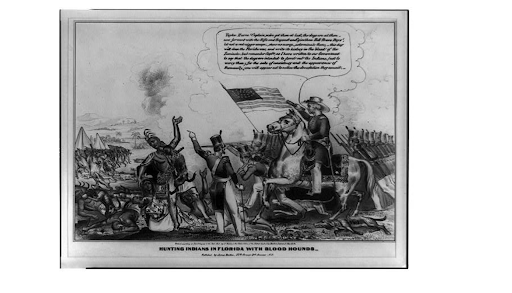

Abstract
The Seminole Wars, lasting from 1817 to 1858, were a series of three incidents between the United States government and the Seminole tribe in Florida. The state offered freedom to slaves who converted to Catholicism, creating a safe-haven for runaway slaves with the Seminoles. The U.S. government would view this as a hostile, considering it posed as a major threat to the institution of slavery. The future seventh president, General Andrew Jackson, began his series of attacks in Florida territory to combat the tribe and slaves. The First Seminole War (1817-1818) sees Jackson leading U.S. forces into Florida to recapture the runaway slaves. The Second Seminole War (1835-1842) was an attempt to forcibly relocate the Seminole tribe from Florida to Oklahoma following the Indian Removal Act. Leaders such as Osceola resisted the efforts of the government. The Third Seminole War (1855-1858) was a final attempt to relocate the Indians, which was partially successful, with many Indians making the long journey while very few remained in Florida, hidden in the swamps.
First Seminole War
When Britain had control over Florida, the British frequently encouraged the Seminoles to resist American encroachment into Seminole territory. At that time, Spain controlled Florida and had promised enslaved people freedom if they converted to Catholicism. Tensions escalated as the Seminoles offered refuge to these enslaved individuals, which led to the U.S. Army attacking the tribe during the First Seminole War (1817–1818). The conflict took place in Florida and southern Georgia, with General Andrew Jackson invading Spanish Florida and pushing the Seminoles further south. The War begins on November 21, 1817 when U.S. troops attack a small Seminole village in Fowltown, Georgia. Soldiers demanded that the Seminole chief, Neamathla, surrender himself under the suspicion of murdering families in Georgia. The chief refuses, leading to 20 Seminoles being killed, the town being plundered, and later set ablaze. The attack on Fowltown sparked retaliation, leading to increased tension and bloodshed. Within weeks of the attack, General Andrew Jackson led invasions into the Seminole territory and pushed the natives further into Florida territory. They were seen as an obstacle in America’s goal of increasing their territory. Andrew Jackson destroyed the villages, Spanish forts, and British plantations. After several attacks, Spain ceded Florida to the United States in 1821 through the Adams-Onís Treaty. Following the acquisition of Florida, the U.S. government pressured the Seminoles to relocate westward to lands designated for Native Americans, which would eventually become Oklahoma. Some Seminole leaders agreed to a treaty in 1832 and moved, while others rejected the agreement and retreated into the Florida Everglades. While the Americans continued to push the natives away, they were not done fighting. This war would eventually lead to a second and a third.
Second Seminole War

The Treaty of Payne’s Landing signed by a few Seminoles in 1821 required the Indians to give up Florida Territory and relocate westward to Oklahoma. They would be provided three years to do so. In 1835, when the U.S. Army arrived to enforce the treaty, the Indians were prepared to fight back, initiating the Second Seminole War. The Seminole’s utilized guerilla warfare strategies, allowing them to wage a fierce war. For instance, 180 Seminole Warriors led by Micanopy, Alligator, and Jumper attacked an army detachment led by Major Francis Dade. Only one man had survived the murderous assault. These Seminole Warriors along with Osceola, leader of the Seminole people, lead 3,000 troops against four U.S. generals and 30,000 troops. The Second Seminole War had cost the United States over $20 million and over 1,500 soldiers dead. The war dragged on and the U.S. was desperate in finding a solution. They captured Osceola and attempted to talk peace. No peace was made, and Osceola died in 1838. The United States believed that the war would end soon, but other leaders had simply taken his place and continued to wage war for many years to come. By 1842, most of the Seminoles (roughly 3,000 people) had moved to Oklahoma territory, marking an end to the Second Seminole War with no peace treaty being signed.
Third Seminole War
Although most of the Seminoles moved westward, few stayed behind to save their land. One of these figures was Billy Bowlegs, who was the prominent Seminole leader of the time. The U.S. military continued to attempt to forcibly remove the remaining Seminole population from Florida through tactics such as destroying food supplies. The war eventually ends with Billy Bowlegs agreeing to emigrate and taking most of the remaining Seminoles with him. Once again, very few stayed behind under the guidance of Sam Jones.
Key Figures
Osceola - Named Billy Powell at birth, Osceola was one of the most influential Seminole leaders. He played a pivotal role in resisting U.S. efforts in encroachment during the Second Seminole War and was known for his leadership and tactics. Eventually, he was captured in hopes of putting an end to the war and died in prison in 1838.
Billy Bowlegs - Billy Bowlegs surfaced during the Third Seminole War. He was a key figure in the final attempt in resisting the Americans efforts in relocation in the 1850s.
General Andrew Jackson - Andrew Jackson was a key figure throughout the early stages of the wars. He led numerous military campaigns into Southern Georgia and Florida, pushing the Seminoles off of U.S. territory. He eventually became the seventh President of the United States and created the Indian Removal Act, further pushing away the Indians. His aggression during the wars were pivotal in acquiring Florida and pushing the Indians westward.
General Zachary Taylor - He was a prominent U.S. Army officer who played a significant role in the Seminole Wars alongside Andew Jackson. He was particularly prominent during the Second Seminole War. He would eventually become the 12th president of the United States.
The Seminole people were among the many Native American tribes forced to relocate westward during the 19th century, a result of the U.S. government’s Indian Removal policy. After years of resistance during the Seminole Wars, the U.S. government pressured the Seminoles to give up their lands in Florida and move to Indian Territory, present-day Oklahoma. Their forced relocation was a brutal journey across the entirety of the United States. Many Seminoles were relocated under pressure, and despite fierce resistance, they would inevitably become a part of the Trail of Tears, which would see thousands of Natives displaced from their homelands and having to start all over again.
Significance and Impact
The Seminole Wars are significant because they resulted in the forced removal of the Seminole people from their land, largely opening op the territory for white settlement. It highlighted the complex issues surrounding the Indian removal policies and internal conflicts due to the Seminole’s fierce resistance and involvement of Black Seminoles, or the runaway slaves who joined the tribe. Although the natives may have been relocated, they never lost touch with their culture. As seen in the image above, taken in 1936, long after the end of the Seminole wars, they continued to wear their traditional clothing rather than conforming to American ideologies. The Americans had tried numerous times to re-educate the Indians by removing their “savage nature” and replacing it with a more civilized nature by wearing suits, changing their names, and hiding away everything they knew.
Today, there are only 3,500 Seminoles in Florida, who are descendants of the same Seminoles who stayed behind and very few who found their way back from the west. The mass removal of the tribe has led to the development of modernized cities on former Seminole territory, such as Fort Lauderdale, Fort Myers and Miami. However, the Seminoles are now viewed as one of the few tribes who were never fully defeated in their resistance to relocation. Today, they teach their unique cultural practices, and have innovative business ventures, particularly in gaming or casinos.
Source
https://www.jupiter.fl.us/DocumentCenter/View/322/The-Forgotten-Seminoles
https://seminolenationmuseum.org/history-seminole-nation-the-seminole-wars
https://dos.fl.gov/florida-facts/florida-history/seminole-history
https://dos.fl.gov/florida-facts/florida-history/seminole-history/the-seminole-wars
https://www.loc.gov/item/2008661482/
https://www.loc.gov/resource/cph.3c12859/
https://www.history.com/this-day-in-history/first-seminole-war-begins
https://seminolenationmuseum.org/history-seminole-nation-the-seminole-wars
https://dos.fl.gov/florida-facts/florida-history/seminole-history
https://dos.fl.gov/florida-facts/florida-history/seminole-history/the-seminole-wars
https://www.loc.gov/item/2008661482/
https://www.loc.gov/resource/cph.3c12859/
https://www.history.com/this-day-in-history/first-seminole-war-begins